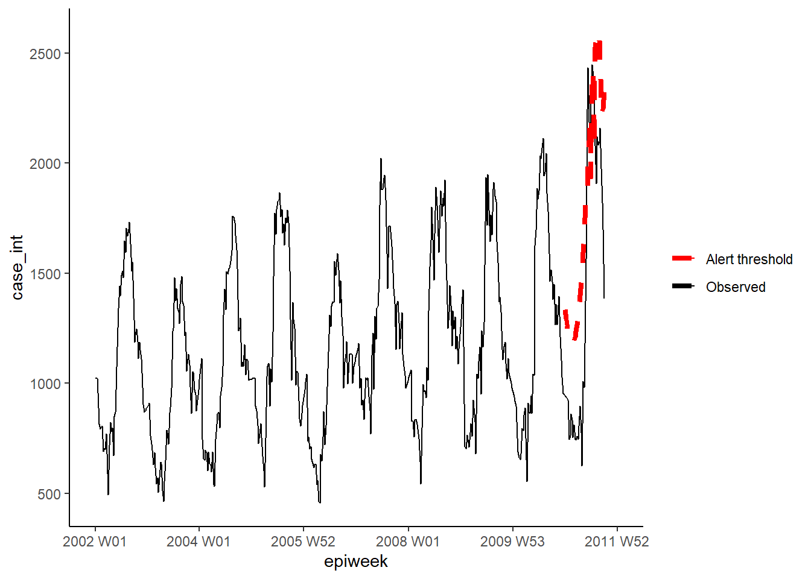
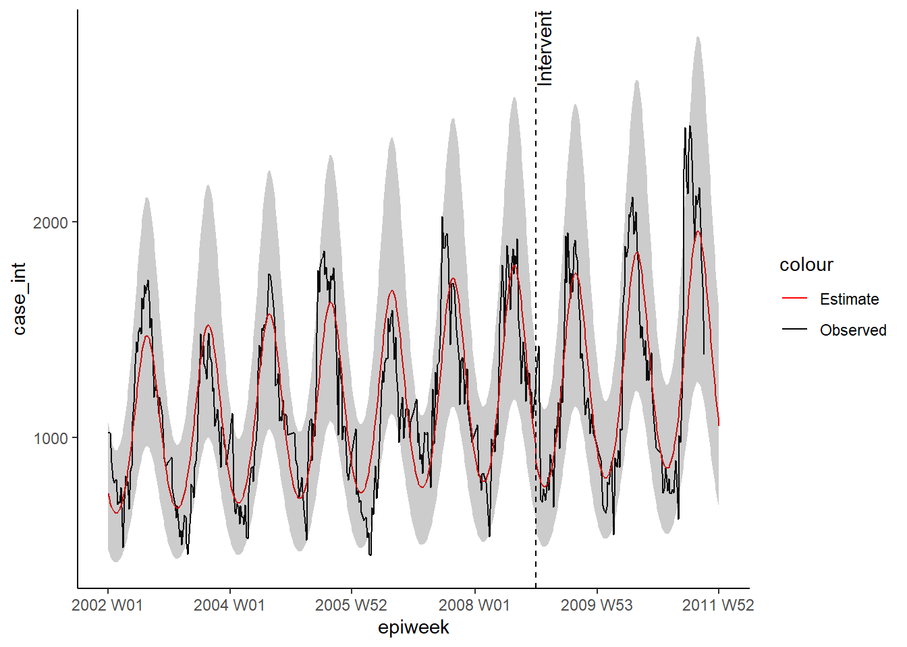

23 Chuỗi thời gian và phát hiện ổ dịch
23.1 Tổng quan
Chương này minh họa cách sử dụng của một số packages cho phân tích chuỗi thời gian. Các packages chủ yếu đến từ hệ sinh thái tidyverts, ngoài ra cũng sử dụng RECON trending package để fit các mô hình dịch tễ học bệnh truyền nhiễm.
VÍ dụ dưới đây chúng ta sẽ sử dụng bộ dữ liệu về Campylobacter ở Đức thuộc package surveillance (xem chương Tải sách và dữ liệu để biết thêm chi tiết). Tuy nhiên, nếu bạn muốn thử chạy code này trên bộ dữ liệu lớn hơn (nhiều quốc gia hoặc tầng), bạn có thể tham khảo code mẫu tại repo github của r4epis.
Các chủ đề được đề cập bao gồm:
- Dữ liệu chuỗi thời gian
- Phân tích mô tả
- Fitting đường hồi quy
- Mối liên hệ của hai chuỗi thời gian
- Phát hiện dịch bệnh
- Chuỗi thời gian bị gián đoạn
23.2 Chuẩn bị
Packages
Đoạn code này hiển thị việc gọi các package cần thiết cho các phân tích. Trong cuốn sách này, chúng tôi nhấn mạnh việc sử dụng hàm p_load() từ package pacman, giúp cài đặt các package cần thiết và gọi chúng ra để sử dụng. Bạn cũng có thể gọi các packages đã cài đặt với hàm library() của base R. Xem thêm chương R cơ bản để có thêm thông tin về các packages trong R.
pacman::p_load(rio, # File import
here, # File locator
tidyverse, # data management + ggplot2 graphics
tsibble, # handle time series datasets
slider, # for calculating moving averages
imputeTS, # for filling in missing values
feasts, # for time series decomposition and autocorrelation
forecast, # fit sin and cosin terms to data (note: must load after feasts)
trending, # fit and assess models
tmaptools, # for getting geocoordinates (lon/lat) based on place names
ecmwfr, # for interacting with copernicus sateliate CDS API
stars, # for reading in .nc (climate data) files
units, # for defining units of measurement (climate data)
yardstick, # for looking at model accuracy
surveillance # for aberration detection
)Nhập dữ liệu
Bạn có thể tải xuống tất cả dữ liệu được sử dụng trong sổ tay này thông qua các hướng dẫn trong chương Tải sách và dữ liệu.
Bộ dữ liệu minh họa được sử dụng trong phần này là số lượng các trường hợp campylobacter hàng tuần được báo cáo ở Đức từ năm 2001 đến 2011. Bạn có thể bấm vào đây để tải xuống bộ dữ liệu này (.xlsx).
Bộ dữ liệu này là một phiên bản rút gọn của bộ dữ liệu có sẵn trong package surveillance. (để biết chi tiết, hãy gọi surveillance package ra sau đó nhập ?campyDE)
Nhập dữ liệu này với hàm import() từ package rio (nó xử lý nhiều loại tệp như .xlsx, .csv, .rds - xem thêm chương Nhập xuất dữ liệu để biết thêm chi tiết).
10 hàng đầu tiên được hiển thị như bên dưới.
Làm sạch dữ liệu
Code dưới đây đảm bảo rằng cột ngày thág đã ở đúng định dạng. Trong chương này chúng ta sẽ sử dụng package tsibble và hàm yearweek sẽ được sử dụng để tạp biến lịch theo tuần. Có một số cách để thực hiện việc này (Xem chương Làm việc với ngày tháng để biết thêm chi tiết), tuy nhiên đối với dữ liệu chuỗi thời gian thì tốt nhất nên sử dụng thống nhất một framework (tsibble).
Tải xuống dữ liệu khí hậu
Trong mục mối tương quan của hai chuỗi thời gian trong chương này, chúng ta sẽ so sánh số lượng trường hợp campylobacter với dữ liệu khí hậu. Dữ liệu khí hậu tại bất kỳ đâu trên thế giới đều có thể được tải xuống từ EU’s Copernicus Satellite. Đây không phải là các phép đo chính xác, mà dựa trên một mô hình (tương tự như phép nội suy), tuy nhiên lợi ích là mức độ bao phủ toàn cầu hàng giờ cũng như các dự báo.
Bạn có thể tải xuống từng tệp dữ liệu khí hậu này từ chương Tải sách và dữ liệu.
Với mục đích minh họa ở đây, chúng tôi sẽ trình bày code để sử dụng package ecmwfr để lấy những dữ liệu này từ kho dữ liệu khí hậu Copernicus. Bạn sẽ cần tạo một tài khoản miễn phí để thực hiện. Trang web của package có một hướng dẫn hữu ích về cách thực hiện việc này. Dưới đây là code minh họa về cách thực hiện việc này, khi bạn có các khóa API thích hợp. Bạn phải thay thế X bên dưới bằng ID tài khoản của mình. Bạn sẽ cần tải xuống một năm dữ liệu cùng một lúc nếu không máy chủ sẽ hết thời gian chờ.
Nếu bạn không chắc chắn về tọa độ cho vị trí mà bạn muốn tải dữ liệu xuống, bạn có thể sử dụng gói tmaptools để lấy tọa độ ra từ open street maps. Một cách khác là dùng package photon, tuy nhiên nó chưa được chính thức xuất bản lên trên CRAN; cái hay của photon là nó cung cấp nhiều dữ liệu ngữ cảnh hơn khi có một số kết quả phù hợp cho tìm kiếm của bạn.
## retrieve location coordinates
coords <- geocode_OSM("Germany", geometry = "point")
## pull together long/lats in format for ERA-5 querying (bounding box)
## (as just want a single point can repeat coords)
request_coords <- str_glue_data(coords$coords, "{y}/{x}/{y}/{x}")
## Pulling data modelled from copernicus satellite (ERA-5 reanalysis)
## https://cds.climate.copernicus.eu/cdsapp#!/software/app-era5-explorer?tab=app
## https://github.com/bluegreen-labs/ecmwfr
## set up key for weather data
wf_set_key(user = "XXXXX",
key = "XXXXXXXXX-XXXX-XXXX-XXXX-XXXXXXXXXXX",
service = "cds")
## run for each year of interest (otherwise server times out)
for (i in 2002:2011) {
## pull together a query
## see here for how to do: https://bluegreen-labs.github.io/ecmwfr/articles/cds_vignette.html#the-request-syntax
## change request to a list using addin button above (python to list)
## Target is the name of the output file!!
request <- request <- list(
product_type = "reanalysis",
format = "netcdf",
variable = c("2m_temperature", "total_precipitation"),
year = c(i),
month = c("01", "02", "03", "04", "05", "06", "07", "08", "09", "10", "11", "12"),
day = c("01", "02", "03", "04", "05", "06", "07", "08", "09", "10", "11", "12",
"13", "14", "15", "16", "17", "18", "19", "20", "21", "22", "23", "24",
"25", "26", "27", "28", "29", "30", "31"),
time = c("00:00", "01:00", "02:00", "03:00", "04:00", "05:00", "06:00", "07:00",
"08:00", "09:00", "10:00", "11:00", "12:00", "13:00", "14:00", "15:00",
"16:00", "17:00", "18:00", "19:00", "20:00", "21:00", "22:00", "23:00"),
area = request_coords,
dataset_short_name = "reanalysis-era5-single-levels",
target = paste0("germany_weather", i, ".nc")
)
## download the file and store it in the current working directory
file <- wf_request(user = "XXXXX", # user ID (for authentication)
request = request, # the request
transfer = TRUE, # download the file
path = here::here("data", "Weather")) ## path to save the data
}Nhập dữ liệu khí hậu
Cho dù bạn đã tải xuống dữ liệu khí hậu thông qua sổ tay này hay sử dụng code ở trên, thì bạn cần phải các tệp dữ liệu khí hậu trong 10 năm có phần mở rộng là “.nc”, được lưu trữ trong cùng một thư mục trong máy tính của bạn.
Sử dụng mã bên dưới để nhập các tệp này vào R với package stars.
## define path to weather folder
file_paths <- list.files(
here::here("data", "time_series", "weather"), # replace with your own file path
full.names = TRUE)
## only keep those with the current name of interest
file_paths <- file_paths[str_detect(file_paths, "germany")]
## read in all the files as a stars object
data <- stars::read_stars(file_paths)## t2m, tp,
## t2m, tp,
## t2m, tp,
## t2m, tp,
## t2m, tp,
## t2m, tp,
## t2m, tp,
## t2m, tp,
## t2m, tp,
## t2m, tp,Khi các tệp này đã được nhập vào một đối tượng có tên data, chúng ta sẽ chuyển chúng thành một data frame.
## change to a data frame
temp_data <- as_tibble(data) %>%
## add in variables and correct units
mutate(
## create an calendar week variable
epiweek = tsibble::yearweek(time),
## create a date variable (start of calendar week)
date = as.Date(epiweek),
## change temperature from kelvin to celsius
t2m = set_units(t2m, celsius),
## change precipitation from metres to millimetres
tp = set_units(tp, mm)) %>%
## group by week (keep the date too though)
group_by(epiweek, date) %>%
## get the average per week
summarise(t2m = as.numeric(mean(t2m)),
tp = as.numeric(mean(tp)))## `summarise()` has grouped output by 'epiweek'. You can override using the `.groups`
## argument.23.3 Dữ liệu chuỗi thời gian
Có một số package khác nhau để cấu trúc và xử lý dữ liệu chuỗi thời gian. Như đã nói, chúng ta sẽ tập trung vào họ các package thuộc tidyverts và sẽ sử dụng package tsibble để xác định đối tượng chuỗi thời gian. Việc có một tập dữ liệu được xác định là một đối tượng chuỗi thời gian có nghĩa là việc cấu trúc phân tích của chúng ta sẽ trở nên dễ dàng hơn nhiều.
Để thực hiện, chúng ta sử dụng hàm tsibble() và cụ thể “chỉ mục (index)”, vd: biến số cụ thể đơn vị thời gian quan tâm. Trong trường hợp của chúng ta, biến số này có tên epiweek.
Ví dụ: nếu chúng ta có một tập dữ liệu với số lượng hàng tuần theo tỉnh, chúng ta cũng có thể cụ thể biến nhóm bằng cách cụ sử dụng đối số key =. Điều này sẽ cho phép chúng ta thực hiện phân tích cho từng nhóm.
Nhìn vào class(counts), ta thấy ngoài việc là một data frame gọn gàng (“tbl_df”, “tbl”, “data.frame”), nó có các thuộc tính bổ sung của một khung dữ liệu chuỗi thời gian (“tbl_ts”).
Bạn có thể xem nhanh dữ liệu của mình bằng cách sử dụng ggplot2. Từ biểu đồ ta thấy có một xu hướng theo mùa, và không có bất kỳ giá trị bị thiếu nào. Tuy nhiên, dường như có vấn đề với việc báo cáo vào đầu mỗi năm; số ca mắc bệnh giảm vào tuần cuối cùng của năm và sau đó tăng vào tuần đầu tiên của năm tiếp theo.

NGUY HIỂM: Không giống như ví dụ này, phần lớn các bộ dữ liệu sẽ chưa được làm sạch. Bạn sẽ cần phải kiểm tra các bản ghi trùng lặp và bản ghi bị thiếu như bên dưới.
Trùng lặp
tsibble không cho phép các quan sát trùng lặp. Vì vậy, mỗi hàng sẽ cần phải là duy nhất, hoặc duy nhất trong nhóm (biến key). Package này có một số hàm để xác định các bản ghi trùng lặp. Chúng bao gồm các hàm: are_duplicated() trả về một vectơ có giá trị TRUE/FALSE vector, truy vấn xem hàng có là duy nhất không; và hàm duplicates() sẽ cung cấp cho bạn một data frame chứa các hàng trùng lặp.
Xem chương Loại bỏ trùng lặp để biết thêm chi tiết về cách lựa chọn các hàng bạn muốn.
Bản ghi bị thiếu
Chúng ta đã thấy từ cuộc khảo sát tóm tắt bên trên, không có bất kỳ giá trị missing nào được phát hiện, nhưng chúng ta cũng đã thấy rằng dường như có vấn đề với việc báo cáo chậm trễ vào khoảng năm mới. Một cách để giải quyết vấn đề này có thể là đặt các giá trị này thành missing và sau đó impute các giá trị. Dạng đơn giản nhất của khi impute chuỗi thời gian là vẽ một đường thẳng giữa giá trị không bị thiếu cuối cùng và giá trị không bị thiếu tiếp theo. Để làm điều này, chúng ta sẽ sử dụng hàm na_interpolation() từ package imputeTS .
Xem chương Dữ liệu Missing để biết các tùy chọn khác của imputation.
Một giải pháp thay thế khác sẽ là tính toán đường trung bình động, để thử và giải quyết các vấn đề báo cáo rõ ràng này (xem phần tiếp theo và chương Đường trung bình động.
## create a variable with missings instead of weeks with reporting issues
counts <- counts %>%
mutate(case_miss = if_else(
## if epiweek contains 52, 53, 1 or 2
str_detect(epiweek, "W51|W52|W53|W01|W02"),
## then set to missing
NA_real_,
## otherwise keep the value in case
case
))
## alternatively interpolate missings by linear trend
## between two nearest adjacent points
counts <- counts %>%
mutate(case_int = imputeTS::na_interpolation(case_miss)
)
## to check what values have been imputed compared to the original
ggplot_na_imputations(counts$case_miss, counts$case_int) +
## make a traditional plot (with black axes and white background)
theme_classic()
23.4 Phân tích mô tả
Đường trung bình động
Nếu dữ liệu rất nhiễu (dao động lên và xuống), việc tính toán đường trung bình động có thể sẽ hữu ích. Trong ví dụ dưới đây, với mỗi tuần chúng ta sẽ tính toán số trường hợp trung bình từ bốn tuần trước đó. Việc này sẽ giúp dữ liệu dễ diễn giải hơn. Trong trường hợp của chúng ta, điều này không thực sự bổ sung nhiều, vì vậy chúng ta sẽ bám vào dữ liệu nội suy để phân tích thêm. Xem chương Đường trung bình động để biết thêm chi tiết.
## create a moving average variable (deals with missings)
counts <- counts %>%
## create the ma_4w variable
## slide over each row of the case variable
mutate(ma_4wk = slider::slide_dbl(case,
## for each row calculate the name
~ mean(.x, na.rm = TRUE),
## use the four previous weeks
.before = 4))
## make a quick visualisation of the difference
ggplot(counts, aes(x = epiweek)) +
geom_line(aes(y = case)) +
geom_line(aes(y = ma_4wk), colour = "red")
Tính chu kỳ
Sau đây chúng ta sẽ định nghĩa một hàm để tạo một biểu đồ chu kỳ. Xem chương Viết hàm để biết cách tạo một hàm trong R.
Đầu tiên, hàm được định nghĩa. Các đối số của nó bao gồm một bộ dữ liệu với cột counts, start_week = là tuần đầu tiên của bộ dữ liệu, một con số để cho biết có bao nhiêu chu kỳ mỗi năm (ví dụ: 52, 12), và cuối cùng là kiểu đầu ra (xem chi tiết trong đoạn mã bên dưới).
## Function arguments
#####################
## x is a dataset
## counts is variable with count data or rates within x
## start_week is the first week in your dataset
## period is how many units in a year
## output is whether you want return spectral periodogram or the peak weeks
## "periodogram" or "weeks"
# Define function
periodogram <- function(x,
counts,
start_week = c(2002, 1),
period = 52,
output = "weeks") {
## make sure is not a tsibble, filter to project and only keep columns of interest
prepare_data <- dplyr::as_tibble(x)
# prepare_data <- prepare_data[prepare_data[[strata]] == j, ]
prepare_data <- dplyr::select(prepare_data, {{counts}})
## create an intermediate "zoo" time series to be able to use with spec.pgram
zoo_cases <- zoo::zooreg(prepare_data,
start = start_week, frequency = period)
## get a spectral periodogram not using fast fourier transform
periodo <- spec.pgram(zoo_cases, fast = FALSE, plot = FALSE)
## return the peak weeks
periodo_weeks <- 1 / periodo$freq[order(-periodo$spec)] * period
if (output == "weeks") {
periodo_weeks
} else {
periodo
}
}
## get spectral periodogram for extracting weeks with the highest frequencies
## (checking of seasonality)
periodo <- periodogram(counts,
case_int,
start_week = c(2002, 1),
output = "periodogram")
## pull spectrum and frequence in to a dataframe for plotting
periodo <- data.frame(periodo$freq, periodo$spec)
## plot a periodogram showing the most frequently occuring periodicity
ggplot(data = periodo,
aes(x = 1/(periodo.freq/52), y = log(periodo.spec))) +
geom_line() +
labs(x = "Period (Weeks)", y = "Log(density)")
## get a vector weeks in ascending order
peak_weeks <- periodogram(counts,
case_int,
start_week = c(2002, 1),
output = "weeks")LƯU Ý: Có thể sử dụng các tuần ở trên để thêm chúng vào các chu kỳ sin và cosin, tuy nhiên chúng ta sẽ sử dụng một hàm để tạo ra các chu kỳ này (xem phần hồi quy bên dưới)
Tách nhỏ chuỗi thời gian
Phân tách cổ điển được sử dụng để chia nhỏ một chuỗi thời gian thành một số phần, khi kết hợp lại với nhau sẽ tạo nên xu hướng mà bạn nhìn thấy. Các phần khác nhau này là:
- Chu kỳ xu hướng (hướng dài hạn của dữ liệu)
- Theo mùa (lặp lại xu hướng)
- Sự ngẫu nhiên (những gì còn lại sau khi loại bỏ xu hướng và theo mùa)
## decompose the counts dataset
counts %>%
# using an additive classical decomposition model
model(classical_decomposition(case_int, type = "additive")) %>%
## extract the important information from the model
components() %>%
## generate a plot
autoplot()
Tự tương quan
Tự tương quan cho bạn biết về mối quan hệ giữa số lượng của mỗi tuần và các tuần trước đó (được gọi là trễ).
Sử dụng hàm ACF(), chúng ta có thể tạo ra một biểu đồ cho chúng ta thấy số lượng đường có mối quan hệ ở các độ trễ khác nhau. Khi độ trễ bằng 0 (x = 0), đường này sẽ luôn là 1 vì nó cho thấy mối quan hệ giữa một quan sát và chính nó (không được hiển thị). Đường đầu tiên hiển thị ở đây (x = 1) cho thấy mối quan hệ giữa mỗi quan sát và quan sát trước nó (độ trễ bằng 1), đường thứ hai cho thấy mối quan hệ giữa mỗi quan sát và quan sát trước quan sát cuối cùng (độ trễ là 2) và cứ như thế cho đến khi độ trễ là 52, cho thấy mối quan hệ giữa mỗi quan sát và quan sát từ 1 năm (52 tuần trước đó).
Sử dụng hàm ACF() (cho tự tương quan một phần) hiển thị cùng một loại quan hệ nhưng được hiệu chỉnh cho tất cả các tuần khác nằm giữa. Nó sẽ ít thông tin hơn để xác định tính chu kỳ.
## using the counts dataset
counts %>%
## calculate autocorrelation using a full years worth of lags
ACF(case_int, lag_max = 52) %>%
## show a plot
autoplot()
## using the counts data set
counts %>%
## calculate the partial autocorrelation using a full years worth of lags
PACF(case_int, lag_max = 52) %>%
## show a plot
autoplot()Bạn có thể kiểm định giả thuyết không về tính độc lập trong một chuỗi thời gian (vd: không tự tương quan) sử dụng kiểm định Ljung-Box (trong package stats). Giá trị p có ý nghĩa cho thấy rằng có sự tự tương quan trong dữ liệu.
##
## Box-Ljung test
##
## data: counts$case_int
## X-squared = 462.65, df = 1, p-value < 2.2e-1623.5 Fit mô hình hồi quy
Có thể fit một số lượng lớn các hồi quy khác nhau vào một chuỗi thời gian, tuy nhiên ở đây chúng tôi sẽ trình bày cách để fit một hồi quy nhị thức âm - vì nó thường phù hợp nhất cho dữ liệu về trường hợp bệnh trong các bệnh truyền nhiễm.
Chu kỳ Fourier
Chu kỳ Fourier tương đương với các đường cong sin và cosin. Sự khác biệt là chúng được dựa trên việc tìm ra sự kết hợp thích hợp nhất của các đường cong để giải thích dữ liệu của bạn.
If only fitting một chu kỳ Fourier, điều này sẽ tương đương với việc fitting một đường sin và cosin cho độ trễ xảy ra thường xuyên nhất được thấy trong biểu đồ chu kỳ của bạn (trong trường hợp của chúng ta là 52 tuần). Chúng ta sử dụng hàm fourier() từ package forecast.
Trong code dưới đây, chúng ta gán bằng cách sử dụng $, vì hàm fourier() trả về hai cột (một cho sin và một cho cosin) và vì vậy chúng được thêm vào tập dữ liệu dưới dạng danh sách, được gọi là “fourier” - nhưng danh sách này sau đó có thể được sử dụng như một biến bình thường trong hồi quy.
Hồi quy nhị thức âm
Bạn có thể fit các mô hình hồi quy sử dụng các hàm từ package stats hoặc MASS trong base R (vd: lm(), glm() và glm.nb()). Tuy nhiên, chúng ta sẽ sử dụng các hàm từ package trending, vì nó cho phép tính khoảng tin cậy và khoảng tiên lượng phù hợp (các hàm khác không có sẵn). Cú pháp vẫn như vậy, bạn cụ thể biến đầu ra và theo sau bởi dấu ngã (~), sau đó thêm các biến giải thích vào, phân cách nhau bởi dấu cộng (+).
Sự khác biệt là đầu tiên chúng ta phải xác định model trước, và sau đó fit() nó vào dữ liệu. Điều này rất hữu ích vì nó cho phép so sánh nhiều mô hình khác nhau với cùng một cú pháp..
MẸO: Nếu bạn muốn sử dụng tỷ suất hơn là số lượng, bạn có thể bao gồm biến dân số dưới dạng thuật ngữ bù logarit, bằng cách thêm offset(log(population). Sau đó, bạn sẽ cần đặt dân số là 1, trước khi sử dụng hàm predict() để tạo ra tỷ suất.
MẸO: Để fit những mô hình phức tạp hơn chẳng hạn như ARIMA hoặc prophet, hãy tham khảo package fable.
## define the model you want to fit (negative binomial)
model <- glm_nb_model(
## set number of cases as outcome of interest
case_int ~
## use epiweek to account for the trend
epiweek +
## use the fourier terms to account for seasonality
fourier)
## fit your model using the counts dataset
fitted_model <- trending::fit(model, counts)
## calculate confidence intervals and prediction intervals
observed <- predict(fitted_model, simulate_pi = FALSE)
estimate_res <- data.frame(observed$result)
## plot your regression
ggplot(data = estimate_res, aes(x = epiweek)) +
## add in a line for the model estimate
geom_line(aes(y = estimate),
col = "Red") +
## add in a band for the prediction intervals
geom_ribbon(aes(ymin = lower_pi,
ymax = upper_pi),
alpha = 0.25) +
## add in a line for your observed case counts
geom_line(aes(y = case_int),
col = "black") +
## make a traditional plot (with black axes and white background)
theme_classic()
Phần dư
Để xem mô hình của chúng ta phù hợp với dữ liệu quan sát như thế nào, chúng ta cần xem xét phần dư. Phần dư là sự khác biệt giữa số lượng được quan sát và số lượng được ước tính từ mô hình. Chúng ta có thể tính toán nó một cách đơn giản bằng cách dùng hàm case_int - estimate, nhưng hàm residuals() trích xuất nó trực tiếp từ mô hình hồi quy cho chúng ta.
Những gì chúng ta thấy dưới đây là chúng ta không giải thích tất cả các sự dao động mà chúng ta có thể có với mô hình. Có thể chúng ta cần fit nhiều chu kỳ fourier hơn, và gủau quyết biên độ. Tuy nhiên đối với ví dụ này, chúng ta sẽ để nguyên như vậy. Các biểu đồ cho thấy mô hình của chúng ta hoạt động kém hơn ở các đỉnh và đáy (khi số lượng ở mức cao nhất và thấp nhất) và có nhiều khả năng ước tính không đầy đủ các số lượng quan sát được.
## calculate the residuals
estimate_res <- estimate_res %>%
mutate(resid = fitted_model$result[[1]]$residuals)
## are the residuals fairly constant over time (if not: outbreaks? change in practice?)
estimate_res %>%
ggplot(aes(x = epiweek, y = resid)) +
geom_line() +
geom_point() +
labs(x = "epiweek", y = "Residuals")
## is there autocorelation in the residuals (is there a pattern to the error?)
estimate_res %>%
as_tsibble(index = epiweek) %>%
ACF(resid, lag_max = 52) %>%
autoplot()## are residuals normally distributed (are under or over estimating?)
estimate_res %>%
ggplot(aes(x = resid)) +
geom_histogram(binwidth = 100) +
geom_rug() +
labs(y = "count") ## compare observed counts to their residuals
## should also be no pattern
estimate_res %>%
ggplot(aes(x = estimate, y = resid)) +
geom_point() +
labs(x = "Fitted", y = "Residuals")## formally test autocorrelation of the residuals
## H0 is that residuals are from a white-noise series (i.e. random)
## test for independence
## if p value significant then non-random
Box.test(estimate_res$resid, type = "Ljung-Box")##
## Box-Ljung test
##
## data: estimate_res$resid
## X-squared = 336.25, df = 1, p-value < 2.2e-1623.6 Mối quan hệ của hai chuỗi thời gian
Ở đây chúng ta xem xét việc sử dụng dữ liệu thời tiết (đặc biệt là nhiệt độ) để giải thích số lượng trường hợp campylobacter.
Nối hai bộ dữ liệu
Bạn có thể nối các tập dữ liệu của mình sử dụng biến tuần. Để biết thêm về nối dữ liệu, xem chương Nối dữ liệu.
Phân tích mô tả
Đầu tiên hãy trực quan hóa dữ liệu của bạn để kiểm tra xem có bất kỳ mối tương quan rõ ràng nào không. Biểu đồ dưới đây cho thấy một mối quan hệ rõ ràng về tính mùa vụ của các biến, và nhiệt độ có thể đạt đỉnh vài tuần trước khi các trường hợp xảy ra. Để biết thêm về xoay trục dữ liệu, xem chương Xoay trục dữ liệu.
counts %>%
## keep the variables we are interested
select(epiweek, case_int, t2m) %>%
## change your data in to long format
pivot_longer(
## use epiweek as your key
!epiweek,
## move column names to the new "measure" column
names_to = "measure",
## move cell values to the new "values" column
values_to = "value") %>%
## create a plot with the dataset above
## plot epiweek on the x axis and values (counts/celsius) on the y
ggplot(aes(x = epiweek, y = value)) +
## create a separate plot for temperate and case counts
## let them set their own y-axes
facet_grid(measure ~ ., scales = "free_y") +
## plot both as a line
geom_line()
Lags và tương quan chéo
Để kiểm định xem những tuần nào có tương quan nhiều nhất tới các trường hợp và nhiệt độ, bạn có thể sử dụng hàm tương quan chéo (CCF()) từ package feasts. Bạn cũng có thể trực quan hóa (hơn là sử dụng arrange) sử dụng hàm autoplot().
counts %>%
## calculate cross-correlation between interpolated counts and temperature
CCF(case_int, t2m,
## set the maximum lag to be 52 weeks
lag_max = 52,
## return the correlation coefficient
type = "correlation") %>%
## arange in decending order of the correlation coefficient
## show the most associated lags
arrange(-ccf) %>%
## only show the top ten
slice_head(n = 10)## # A tsibble: 10 x 2 [1W]
## lag ccf
## <cf_lag> <dbl>
## 1 -4W 0.749
## 2 -5W 0.745
## 3 -3W 0.735
## 4 -6W 0.729
## 5 -2W 0.727
## 6 -7W 0.704
## 7 -1W 0.695
## 8 -8W 0.671
## 9 0W 0.649
## 10 47W 0.638Chúng ta thấy rằng độ trễ 4 tuần có mối tương quan cao nhất, vì vậy chúng ta tạo một biến nhiệt độ trễ để đưa vào mô hình hồi quy.
NGUY HIỂM: Lưu ý rằng bốn tuần đầu tiên dữ liệu của chúng ta trong biến nhiệt độ trễ bị thiếu (NA) - bởi vì không có bốn tuần trước đó để lấy dữ liệu. Để sử dụng bộ dữ liệu này với hàm trending predict(), chúng ta cần phải sử dụng đối số simulate_pi = FALSE bên trong hàm predict(). Nếu chúng ta muốn sử dụng tùy chọn mô phỏng, thì chúng ta phải loại bỏ các giá trị missings và lưu thành một bộ dữ liệu mới bằng cách thêm hàm drop_na(t2m_lag4) vào đoạn code dưới đây.
Hồi quy nhị thức âm với hai biến số
Chúng ta sẽ fit một mô hình hồi quy nhị thức âm như đã thực hiện trước đó. Lần này chúng ta thêm biến nhiệt độ có độ trễ là bốn tuần.
CẨN TRỌNG: Lưu ý cách sử dụng của đối số simulate_pi = FALSE bên trong hàm predict(). Điều này là bởi hành vi mặc định của trending là sử dụng package ciTools để ước tính khoảng tiên lượng. Nó sẽ không hoạt động nếu có giá trị NA, cũng như tạo ra nhiều khoảng chi tiết hơn. Xem ?trending::predict.trending_model_fit để biết thêm chi tiết.
## define the model you want to fit (negative binomial)
model <- glm_nb_model(
## set number of cases as outcome of interest
case_int ~
## use epiweek to account for the trend
epiweek +
## use the fourier terms to account for seasonality
fourier +
## use the temperature lagged by four weeks
t2m_lag4
)
## fit your model using the counts dataset
fitted_model <- trending::fit(model, counts)
## calculate confidence intervals and prediction intervals
observed <- predict(fitted_model, simulate_pi = FALSE)Để khảo sát các chu kỳ đơn lẻ, chúng ta có thể lấy mô hình hồi quy nhị thức âm gốc ra khỏi định dạng trending bằng cách sử dụng hàm get_model() và chuyển nó tới hàm tidy() của package broom để truy xuất các ước tính được lũy thừa hóa và các khoảng tin cậy.
Điều này cho chúng ta thấy là nhiệt độ trễ, sau khi kiểm soát xu hướng và tính theo mùa, tương tự như số lượng trường hợp (ước tính ~ 1) và sự liên quan có ý nghĩa. Điều này cho thấy rằng nó có thể là một biến số tốt để sử dụng trong việc dự báo các ca bệnh trong tương lai (các dữ liệu dự báo khí hậu luôn có sẵn).
## [[1]]
##
## Call: glm.nb(formula = case_int ~ epiweek + fourier + t2m_lag4, data = counts,
## init.theta = 32.80689607, link = log)
##
## Coefficients:
## (Intercept) epiweek fourierS1-52 fourierC1-52 t2m_lag4
## 5.82535083 0.00008464 -0.28502594 -0.19537827 0.00667157
##
## Degrees of Freedom: 504 Total (i.e. Null); 500 Residual
## (4 observations deleted due to missingness)
## Null Deviance: 2015
## Residual Deviance: 508.2 AIC: 6784Đánh giá nhanh mô hình cho thấy nó có thể thực hiện tốt hơn công việc ước tính số ca bệnh quan sát được.
estimate_res <- data.frame(observed$result)
## plot your regression
ggplot(data = estimate_res, aes(x = epiweek)) +
## add in a line for the model estimate
geom_line(aes(y = estimate),
col = "Red") +
## add in a band for the prediction intervals
geom_ribbon(aes(ymin = lower_pi,
ymax = upper_pi),
alpha = 0.25) +
## add in a line for your observed case counts
geom_line(aes(y = case_int),
col = "black") +
## make a traditional plot (with black axes and white background)
theme_classic()Phần dư
Chúng ta một lần nữa lại khảo sát phần dư để xem mô hình của chúng ta phù hợp với dữ liệu quan sát như thế nào. Các kết quả và phiên giải ở đây tương tự như kết quả của hồi quy trước đó, vì vậy sẽ khả thi hơn khi chọn mô hình đơn giản hơn mà không có nhiệt độ.
## calculate the residuals
estimate_res <- estimate_res %>%
mutate(resid = case_int - estimate)
## are the residuals fairly constant over time (if not: outbreaks? change in practice?)
estimate_res %>%
ggplot(aes(x = epiweek, y = resid)) +
geom_line() +
geom_point() +
labs(x = "epiweek", y = "Residuals")
## is there autocorelation in the residuals (is there a pattern to the error?)
estimate_res %>%
as_tsibble(index = epiweek) %>%
ACF(resid, lag_max = 52) %>%
autoplot()## are residuals normally distributed (are under or over estimating?)
estimate_res %>%
ggplot(aes(x = resid)) +
geom_histogram(binwidth = 100) +
geom_rug() +
labs(y = "count") ## compare observed counts to their residuals
## should also be no pattern
estimate_res %>%
ggplot(aes(x = estimate, y = resid)) +
geom_point() +
labs(x = "Fitted", y = "Residuals")## formally test autocorrelation of the residuals
## H0 is that residuals are from a white-noise series (i.e. random)
## test for independence
## if p value significant then non-random
Box.test(estimate_res$resid, type = "Ljung-Box")##
## Box-Ljung test
##
## data: estimate_res$resid
## X-squared = 339.52, df = 1, p-value < 2.2e-1623.7 Phát hiện ổ dịch
Chúng tôi sẽ trình bày hai phương pháp (tương tự) để phát hiện các ổ dịch ở đây. Cách đầu tiên được xây dựng dựa vào phần bên trên. Chúng ta sử dụng package trending để fit các mô hình hồi quy cho các năm trước đó, sau đó dự báo cho các năm tiếp theo. Nếu số lượng quan sát được cao hơn những gì chúng tôi dự báo, thì khả năng là đã có một đợt bùng phát. Phương pháp thứ hai dựa trên nguyên tắc tương tự nhưng sử dụng package surveillance, cung cấp nhiều thuật toán khác nhau để phát hiện các thay đổi bất thường.
CẨN TRỌNG: Thông thường, bạn quan tâm đến năm hiện tại (do bạn chỉ biết số ca bệnh đến tuần hiện tại). Vì vậy, trong ví dụ này, chúng tôi đang giả định là tuần 39 của năm 2011.
Package trending
Đối với phương pháp này, chúng ta xác định một mốc (baseline) (thường là khoảng 5 năm dữ liệu). Chúng ta fit một mô hình hồi quy tới dữ liệu baseline, và sau đó sử dụng nó để ước tính cho năm sau.
Điểm cắt ngày
Sẽ dễ dàng hơn khi xác định ngày của bạn ở một nơi và sau đó sử dụng những ngày này trong suốt phần còn lại trong của bạn.
Ở đây chúng ta xác định ngày bắt đầu (khi các quan sát của chúng ta bắt đầu) và ngày làm điểm cắt (cut-off date) (kết thúc giai đoạn baseline - và giai đoạn chúng ta muốn dự đoán cho sự bắt đầu). ~Chúng ta cũng xác định có bao nhiêu tuần trong năm mà chúng tôi sẽ dự đoán)~. Chúng ta cũng xác định có bao nhiêu tuần mà chúng ta đang muốn dự báo nằm giữa điểm cắt baseline và ngày kết thúc.
LƯU Ý: Trong ví dụ này, chúng tôi giả sử hiện đang ở cuối tháng 9 năm 2011 (“2011 W39”).
## define start date (when observations began)
start_date <- min(counts$epiweek)
## define a cut-off week (end of baseline, start of prediction period)
cut_off <- yearweek("2010-12-31")
## define the last date interested in (i.e. end of prediction)
end_date <- yearweek("2011-12-31")
## find how many weeks in period (year) of interest
num_weeks <- as.numeric(end_date - cut_off)Thêm hàng
Để có thể dự báo ở định dạng tidyverse, chúng ta cần có số hàng phù hợp trong tập dữ liệu của mình, tức là một hàng cho mỗi tuần cho tới ngày kết thúc end_date đã được xác định bên trên. Đoạn mã bên dưới cho phép bạn thêm các hàng này theo một biến nhóm - ví dụ: nếu chúng ta có nhiều quốc gia trong một tập dữ liệu, chúng ta có thể nhóm theo quốc gia và sau đó thêm các hàng một cách thích hợp cho từng quốc gia. Hàm group_by_key() trong package tsibble cho phép chúng ta thực hiện điều này và sau đó chuyển dữ liệu đã nhóm tới các hàm dplyr như group_modify() và add_row(). Sau đó, chúng ta cụ thể trình tự các tuần giữa một tuần sau tuần tối đa hiện có trong dữ liệu và tuần kết thúc.
Chu kỳ Fourier
Chúng ta phải định nghĩa lại chu kỳ Fourier - bởi vì chúng ta chỉ muốn fit chúng tới ngày baseline và sau đó dự báo (ngoại suy) các chu kỳ này cho năm sau. Để làm điều này, chúng ta cần kết hợp hai danh sách đầu ra từ hàm fourier() lại với nhau; cái đầu tiên dành cho dữ liệu baseline, và cái thứ hai dự đoán cho năm quan tâm (bằng cách xác định đối số h).
Lưu ý để nối dòng chúng ta phải sử dụng hàm rbind() (thay vì hàm tidyverse bind_rows) bởi vì các cột fourier ở định dạng danh sách (vì vậy không được đặt tên riêng lẻ).
## define fourier terms (sincos)
counts <- counts %>%
mutate(
## combine fourier terms for weeks prior to and after 2010 cut-off date
## (nb. 2011 fourier terms are predicted)
fourier = rbind(
## get fourier terms for previous years
fourier(
## only keep the rows before 2011
filter(counts,
epiweek <= cut_off),
## include one set of sin cos terms
K = 1
),
## predict the fourier terms for 2011 (using baseline data)
fourier(
## only keep the rows before 2011
filter(counts,
epiweek <= cut_off),
## include one set of sin cos terms
K = 1,
## predict 52 weeks ahead
h = num_weeks
)
)
)Chia dữ liệu và fit mô hình hồi quy
Chúng ta bây giờ cần phải chia dữ liệu của mình thành 2 giai đoạn: giai đoạn baseline và giai đoạn dự báo. Nó có thể thực hiện được với hàm dplyr group_split() sau khi nhóm bởi group_by(), và sẽ tạo ra một danh sách gồm hai data frame, một trước thời điểm cut-off và một cái ở thời điểm sau cut-off.
Chúng ta sau đó sử dụng hàm pluck() từ package purrr để kéo tập dữ liệu ra khỏi danh sách (tương đương với việc sử dụng ngoặc vuông, vd: dat[[1]]), và sau đó có thể fit mô hình của chúng ta tới dữ liệu nền,và sau đó sử dụng hàm predict() cho dữ liệu mà chúng ta quan tâm sau cut-off.
Xem chương Lặp, vòng lặp, và danh sách để biết thêm về purrr.
CẨN TRỌNG: Lưu ý cách sử dụng của đối số simulate_pi = FALSE bên trong hàm predict(). Điều này là bởi hành vi mặc định của trending là sử dụng package ciTools để ước tính khoảng tiên lượng. Nó sẽ không hoạt động nếu có giá trị NA, cũng như tạo ra nhiều khoảng chi tiết hơn. Xem ?trending::predict.trending_model_fit để biết thêm chi tiết.
# split data for fitting and prediction
dat <- counts %>%
group_by(epiweek <= cut_off) %>%
group_split()
## define the model you want to fit (negative binomial)
model <- glm_nb_model(
## set number of cases as outcome of interest
case_int ~
## use epiweek to account for the trend
epiweek +
## use the furier terms to account for seasonality
fourier
)
# define which data to use for fitting and which for predicting
fitting_data <- pluck(dat, 2)
pred_data <- pluck(dat, 1) %>%
select(case_int, epiweek, fourier)
# fit model
fitted_model <- trending::fit(model, fitting_data)
# get confint and estimates for fitted data
observed <- fitted_model %>%
predict(simulate_pi = FALSE)
# forecast with data want to predict with
forecasts <- fitted_model %>%
predict(pred_data, simulate_pi = FALSE)
## combine baseline and predicted datasets
observed <- bind_rows(observed$result, forecasts$result)Như bên trên, chúng ta có thể trực quan hóa mô hình với ggplot. Chúng ta đánh dấu các cảnh báo bằng các chấm màu đỏ cho các trường hợp quan sát được phía trên 95% khoảng dự đoán. Lần này, chúng ta cũng thêm một đường dọc để dán nhãn khi dự báo bắt đầu.
## plot your regression
ggplot(data = observed, aes(x = epiweek)) +
## add in a line for the model estimate
geom_line(aes(y = estimate),
col = "grey") +
## add in a band for the prediction intervals
geom_ribbon(aes(ymin = lower_pi,
ymax = upper_pi),
alpha = 0.25) +
## add in a line for your observed case counts
geom_line(aes(y = case_int),
col = "black") +
## plot in points for the observed counts above expected
geom_point(
data = filter(observed, case_int > upper_pi),
aes(y = case_int),
colour = "red",
size = 2) +
## add vertical line and label to show where forecasting started
geom_vline(
xintercept = as.Date(cut_off),
linetype = "dashed") +
annotate(geom = "text",
label = "Forecast",
x = cut_off,
y = max(observed$upper_pi) - 250,
angle = 90,
vjust = 1
) +
## make a traditional plot (with black axes and white background)
theme_classic()## Warning: Removed 13 rows containing missing values (`geom_line()`).
Đánh giá dự báo
Ngoài việc kiểm tra các phần dư, cũng quan trọng khi đánh giá xem mô hình của bạn tốt như thế nào trong việc dự đoán các trường hợp trong tương lai. Điều này cung cấp cho bạn ý tưởng về mức độ đáng tin cậy của các ngưỡng cảnh báo của bạn.
Cách kiểm định truyền thống là xem bạn có thể dự đoán năm gần nhất trước năm hiện tại tốt như thế nào (bởi vì bạn chưa biết số lượng cho “năm hiện tại”). Ví dụ: trong tập dữ liệu của chúng ta, chúng ta sẽ sử dụng dữ liệu từ năm 2002 đến năm 2009 để dự đoán năm 2010 và sau đó xem mức độ chính xác của những dự đoán đó. Sau đó, fit lại mô hình có bao gồm dữ liệu năm 2010 và sử dụng dữ liệu đó để dự đoán cho năm 2011.
Bạn có thể xem ảnh minh họa bên dưới bởi Hyndman và cộng sự trong cuốn “Các nguyên tắc dự báo và thực hành”.
 hình sử dụng lại với sự cho phép của các tác giả
hình sử dụng lại với sự cho phép của các tác giả
Nhược điểm của cách này là bạn không sử dụng tất cả dữ liệu có sẵn và nó không phải là mô hình cuối cùng mà bạn đang sử dụng để dự đoán.
Một giải pháp thay thế là sử dụng một phương pháp được gọi là xác thực chéo (cross-validation). Trong trường hợp này, bạn cuộn qua tất cả dữ liệu có sẵn để fit nhiều mô hình để dự đoán một năm tới. Bạn sẽ sử dụng nhiều dữ liệu hơn trong các mô hình, như được trình bày dưới đây từ cùng cuốn sách của Hyndman và cộng sự. Ví dụ, mô hình đầu tiên sử dụng 2002 để dự đoán năm 2003, mô hình thứ hai sử dụng 2002 và 2003 để dự đoán năm 2004, v.v.
 hình sử dụng lại với sự cho phép của các tác giả
hình sử dụng lại với sự cho phép của các tác giả
Dưới đây chúng ta sử dụng hàm map() từ package purrr để chạy vòng lặp trên từng tập dữ liệu. Sau đó, chúng ta đặt các ước tính vào một tập dữ liệu và hợp nhất với số lượng trường hợp ban đầu để sử dụng package yardstick để tính toán các đo lường về độ chính xác. Chúng ta sẽ tính toán bốn giá trị bao gồm: Root mean squared error (RMSE), Mean absolute error (MAE), Mean absolute scaled error (MASE), Mean absolute percent error (MAPE).
CẨN TRỌNG: Lưu ý cách sử dụng của đối số simulate_pi = FALSE bên trong hàm predict(). Điều này là bởi hành vi mặc định của trending là sử dụng package ciTools để ước tính khoảng tiên lượng. Nó sẽ không hoạt động nếu có giá trị NA, cũng như tạo ra nhiều khoảng chi tiết hơn. Xem ?trending::predict.trending_model_fit để biết thêm chi tiết.
## Cross validation: predicting week(s) ahead based on sliding window
## expand your data by rolling over in 52 week windows (before + after)
## to predict 52 week ahead
## (creates longer and longer chains of observations - keeps older data)
## define window want to roll over
roll_window <- 52
## define weeks ahead want to predict
weeks_ahead <- 52
## create a data set of repeating, increasingly long data
## label each data set with a unique id
## only use cases before year of interest (i.e. 2011)
case_roll <- counts %>%
filter(epiweek < cut_off) %>%
## only keep the week and case counts variables
select(epiweek, case_int) %>%
## drop the last x observations
## depending on how many weeks ahead forecasting
## (otherwise will be an actual forecast to "unknown")
slice(1:(n() - weeks_ahead)) %>%
as_tsibble(index = epiweek) %>%
## roll over each week in x after windows to create grouping ID
## depending on what rolling window specify
stretch_tsibble(.init = roll_window, .step = 1) %>%
## drop the first couple - as have no "before" cases
filter(.id > roll_window)
## for each of the unique data sets run the code below
forecasts <- purrr::map(unique(case_roll$.id),
function(i) {
## only keep the current fold being fit
mini_data <- filter(case_roll, .id == i) %>%
as_tibble()
## create an empty data set for forecasting on
forecast_data <- tibble(
epiweek = seq(max(mini_data$epiweek) + 1,
max(mini_data$epiweek) + weeks_ahead,
by = 1),
case_int = rep.int(NA, weeks_ahead),
.id = rep.int(i, weeks_ahead)
)
## add the forecast data to the original
mini_data <- bind_rows(mini_data, forecast_data)
## define the cut off based on latest non missing count data
cv_cut_off <- mini_data %>%
## only keep non-missing rows
drop_na(case_int) %>%
## get the latest week
summarise(max(epiweek)) %>%
## extract so is not in a dataframe
pull()
## make mini_data back in to a tsibble
mini_data <- tsibble(mini_data, index = epiweek)
## define fourier terms (sincos)
mini_data <- mini_data %>%
mutate(
## combine fourier terms for weeks prior to and after cut-off date
fourier = rbind(
## get fourier terms for previous years
forecast::fourier(
## only keep the rows before cut-off
filter(mini_data,
epiweek <= cv_cut_off),
## include one set of sin cos terms
K = 1
),
## predict the fourier terms for following year (using baseline data)
fourier(
## only keep the rows before cut-off
filter(mini_data,
epiweek <= cv_cut_off),
## include one set of sin cos terms
K = 1,
## predict 52 weeks ahead
h = weeks_ahead
)
)
)
# split data for fitting and prediction
dat <- mini_data %>%
group_by(epiweek <= cv_cut_off) %>%
group_split()
## define the model you want to fit (negative binomial)
model <- glm_nb_model(
## set number of cases as outcome of interest
case_int ~
## use epiweek to account for the trend
epiweek +
## use the furier terms to account for seasonality
fourier
)
# define which data to use for fitting and which for predicting
fitting_data <- pluck(dat, 2)
pred_data <- pluck(dat, 1)
# fit model
fitted_model <- trending::fit(model, fitting_data)
# forecast with data want to predict with
forecasts <- fitted_model %>%
predict(pred_data, simulate_pi = FALSE)
forecasts <- data.frame(forecasts$result[[1]]) %>%
## only keep the week and the forecast estimate
select(epiweek, estimate)
}
)
## make the list in to a data frame with all the forecasts
forecasts <- bind_rows(forecasts)
## join the forecasts with the observed
forecasts <- left_join(forecasts,
select(counts, epiweek, case_int),
by = "epiweek")
## using {yardstick} compute metrics
## RMSE: Root mean squared error
## MAE: Mean absolute error
## MASE: Mean absolute scaled error
## MAPE: Mean absolute percent error
model_metrics <- bind_rows(
## in your forcasted dataset compare the observed to the predicted
rmse(forecasts, case_int, estimate),
mae( forecasts, case_int, estimate),
mase(forecasts, case_int, estimate),
mape(forecasts, case_int, estimate),
) %>%
## only keep the metric type and its output
select(Metric = .metric,
Measure = .estimate) %>%
## make in to wide format so can bind rows after
pivot_wider(names_from = Metric, values_from = Measure)
## return model metrics
model_metrics## # A tibble: 1 × 4
## rmse mae mase mape
## <dbl> <dbl> <dbl> <dbl>
## 1 252. 199. 1.96 17.3package surveillance
Trong phần này chúng ta sẽ sử dụng package surveillance để tạo các ngưỡng cảnh báo dựa trên thuật toán phát hiện ổ dịch. Có một số phương pháp khác có sẵn trong package, tuy nhiên chúng ta sẽ tập trung vào hai tùy chọn ở đây. Để biết chi tiết, xem các bài báo sau về sự ứng dụng và lý thuyết về các thuật toán được sử dụng.
Lựa chọn đầu tiên là sử dụng phương pháp Farrington cải tiến. Nó fit một mô hình nhị thức âm tổng quát (bao gồm xu hướng) và down-weights các đợt bùng phát trong quá khứ (giá trị ngoại lai) để tạo một mức ngưỡng.
Lựa chọn thứ hai là dùng phương pháp glrnb. Nó cũng fit một mô hình nhị thức âm tổng quát nhưng bao gồm cả xu hướng và chu kỳ fourier (vì vậy được ưu ái ở đây). Mô hình hồi quy được sử dụng để tính toán “control mean” (~fitted values) - nó sau đó sử dụng một phép thống kê tính toán likelihood ratio statistic tổng quát hóa để đánh giá nếu có sự thay đổi trung bình cho mỗi tuần. Lưu ý rằng ngưỡng cho mỗi tuần sẽ tính đến các tuần trước, vì vậy nếu có sự thay đổi liên tục, một cảnh báo sẽ được kích hoạt. (Cũng lưu ý rằng sau mỗi lần cảnh báo, thuật toán sẽ được đặt lại)
Để làm việc được với package surveillance, trước tiên chúng ta cần xác định đối tượng “chuỗi thời gian giám sát” (sử dụng hàm sts()) để fit vào bên trong framework.
## define surveillance time series object
## nb. you can include a denominator with the population object (see ?sts)
counts_sts <- sts(observed = counts$case_int[!is.na(counts$case_int)],
start = c(
## subset to only keep the year from start_date
as.numeric(str_sub(start_date, 1, 4)),
## subset to only keep the week from start_date
as.numeric(str_sub(start_date, 7, 8))),
## define the type of data (in this case weekly)
freq = 52)
## define the week range that you want to include (ie. prediction period)
## nb. the sts object only counts observations without assigning a week or
## year identifier to them - so we use our data to define the appropriate observations
weekrange <- cut_off - start_datePhương pháp Farrington
Sau đó chúng ta xác định từng tham số cho phương pháp Farrington trong một danh sách list. Sau đó, chúng ta chạy thuật toán bằng cách sử dụng hàm farringtonFlexible() và sau đó chúng ta có thể trích xuất ngưỡng cảnh báo bằng hàm farringtonmethod@upperbound để thêm vào tệp dữ liệu của chúng ta. Bạn cũng có thể trích xuất giá trị TRUE/FALSE cho từng tuần nếu nó kích hoạt một cảnh báo (cao hơn ngưỡng) bằng cách sử dụng farringtonmethod@alarm.
## define control
ctrl <- list(
## define what time period that want threshold for (i.e. 2011)
range = which(counts_sts@epoch > weekrange),
b = 9, ## how many years backwards for baseline
w = 2, ## rolling window size in weeks
weightsThreshold = 2.58, ## reweighting past outbreaks (improved noufaily method - original suggests 1)
## pastWeeksNotIncluded = 3, ## use all weeks available (noufaily suggests drop 26)
trend = TRUE,
pThresholdTrend = 1, ## 0.05 normally, however 1 is advised in the improved method (i.e. always keep)
thresholdMethod = "nbPlugin",
populationOffset = TRUE
)
## apply farrington flexible method
farringtonmethod <- farringtonFlexible(counts_sts, ctrl)
## create a new variable in the original dataset called threshold
## containing the upper bound from farrington
## nb. this is only for the weeks in 2011 (so need to subset rows)
counts[which(counts$epiweek >= cut_off &
!is.na(counts$case_int)),
"threshold"] <- farringtonmethod@upperboundSau đó, chúng ta có thể trực quan hóa kết quả với ggplot như đã thực hiện ở trên.
ggplot(counts, aes(x = epiweek)) +
## add in observed case counts as a line
geom_line(aes(y = case_int, colour = "Observed")) +
## add in upper bound of aberration algorithm
geom_line(aes(y = threshold, colour = "Alert threshold"),
linetype = "dashed",
size = 1.5) +
## define colours
scale_colour_manual(values = c("Observed" = "black",
"Alert threshold" = "red")) +
## make a traditional plot (with black axes and white background)
theme_classic() +
## remove title of legend
theme(legend.title = element_blank())
Phương pháp GLRNB
Tương tự với phương pháp GLRNB, chúng ta xác định từng tham số vào một danh sách list, sau đó fit thuật toán và trích xuất các giới hạn trên.
CẨN TRỌNG: Phương pháp này sử dụng “brute force” (tương tự như bootstrapping) để tính toán các ngưỡng, vì vậy có thể mất nhiều thời gian!
Xem GLRNB vignette để biết thêm chi tiết.
## define control options
ctrl <- list(
## define what time period that want threshold for (i.e. 2011)
range = which(counts_sts@epoch > weekrange),
mu0 = list(S = 1, ## number of fourier terms (harmonics) to include
trend = TRUE, ## whether to include trend or not
refit = FALSE), ## whether to refit model after each alarm
## cARL = threshold for GLR statistic (arbitrary)
## 3 ~ middle ground for minimising false positives
## 1 fits to the 99%PI of glm.nb - with changes after peaks (threshold lowered for alert)
c.ARL = 2,
# theta = log(1.5), ## equates to a 50% increase in cases in an outbreak
ret = "cases" ## return threshold upperbound as case counts
)
## apply the glrnb method
glrnbmethod <- glrnb(counts_sts, control = ctrl, verbose = FALSE)
## create a new variable in the original dataset called threshold
## containing the upper bound from glrnb
## nb. this is only for the weeks in 2011 (so need to subset rows)
counts[which(counts$epiweek >= cut_off &
!is.na(counts$case_int)),
"threshold_glrnb"] <- glrnbmethod@upperboundTrực quan hóa kết quả đầu ra như bên trên.
ggplot(counts, aes(x = epiweek)) +
## add in observed case counts as a line
geom_line(aes(y = case_int, colour = "Observed")) +
## add in upper bound of aberration algorithm
geom_line(aes(y = threshold_glrnb, colour = "Alert threshold"),
linetype = "dashed",
size = 1.5) +
## define colours
scale_colour_manual(values = c("Observed" = "black",
"Alert threshold" = "red")) +
## make a traditional plot (with black axes and white background)
theme_classic() +
## remove title of legend
theme(legend.title = element_blank())
23.8 Chuỗi thời gian bị gián đoạn
Chuỗi thời gian bị gián đoạn (còn được gọi là hồi quy phân đoạn hoặc phân tích can thiệp), thường được sử dụng để đánh giá tác động của vắc-xin đối với tỷ lệ mắc mới của bệnh. Nhưng nó có thể được sử dụng để đánh giá tác động của một loạt các can thiệp hoặc sự giới thiệu. Ví dụ như những thay đổi trong quy trình của bệnh viện hoặc sự xuất hiện của chủng bệnh mới vào quần thể. Trong ví dụ này, chúng ta sẽ giả định rằng một chủng mới của Campylobacter đã xuất hiện ở Đức vào cuối năm 2008, và xem liệu điều đó có ảnh hưởng đến số lượng trường hợp. Chúng ta sẽ sử dụng hồi quy nhị thức âm một lần nữa. Sự hồi quy lần này sẽ được chia thành hai phần, một phần trước khi can thiệp (hoặc sự xuất hiện của chủng mới) và một phần sau (trước và sau giai đoạn). Điều này cho phép chúng ta tính toán tỷ số tỷ lệ mới mắc giữa hai khoảng thời gian. Giải thích phương trình có thể làm cho điều này rõ ràng hơn (nếu không thì chỉ cần bỏ qua!).
Hồi quy nhị thức âm có thể được định nghĩa như sau:
\[\log(Y_t)= β_0 + β_1 \times t+ β_2 \times δ(t-t_0) + β_3\times(t-t_0 )^+ + log(pop_t) + e_t\]
Trong đó:
\(Y_t\) là số trường hợp quan sát được tại thời điểm \(t\)
\(pop_t\) nếu kích thước quần thể trong 100,000s tại thời điểm \(t\) (không sử dụng tại đây)
\(t_0\) là năm cuối cùng của giai đoạn trước (bao gồm cả thời gian chuyển tiếp nếu có)
\(δ(x\) là hàm chỉ báo (nó là 0 nếu x ≤ 0 và 1 nếu x > 0)
\((x)^+\) là toán tử cut off (nó là x nếu x > 0 và ngược lại sẽ bằng 0)
\(e_t\) biểu thị phần dư
Các chu kỳ bổ sung có xu hướng hoặc theo mùa có thể được thêm vào nếu cần thiết.
\(β_2 \times δ(t-t_0) + β_3\times(t-t_0 )^+\) là một phần của mô hình tuyến tỉnh tổng quát hóa của giai đoạn sau và bằng không ở giai đoạn trước. Điều này có nghĩa là \(β_2\) và \(β_3\) ước tính các hiệu quả của can thiệp.
Chúng ta cần tính toán lại chu kỳ Fourier mà không có dự báo ở đây, vì chúng ta sẽ sử dụng tất cả dữ liệu có sẵn (vd: hồi cứu). Ngoài ra, chúng ta cần tính toán các điều khoản bổ sung cần thiết cho hồi quy. thực tế là chúng ta cần tính chu kỳ mở rộng (extra terms) cho đường hồi quy.
## add in fourier terms using the epiweek and case_int variabless
counts$fourier <- select(counts, epiweek, case_int) %>%
as_tsibble(index = epiweek) %>%
fourier(K = 1)
## define intervention week
intervention_week <- yearweek("2008-12-31")
## define variables for regression
counts <- counts %>%
mutate(
## corresponds to t in the formula
## count of weeks (could probably also just use straight epiweeks var)
# linear = row_number(epiweek),
## corresponds to delta(t-t0) in the formula
## pre or post intervention period
intervention = as.numeric(epiweek >= intervention_week),
## corresponds to (t-t0)^+ in the formula
## count of weeks post intervention
## (choose the larger number between 0 and whatever comes from calculation)
time_post = pmax(0, epiweek - intervention_week + 1))Chúng ta sau đó sử dụng các chi kỳ này để fit một mô hình hồi quy nhị thức âm, và tạo một bảng với phần trăm thay đổi. Những gì ví dụ này cho thấy là không có thay đổi đáng kể.
CẨN TRỌNG: Lưu ý cách sử dụng của đối số simulate_pi = FALSE bên trong hàm predict(). Điều này là bởi hành vi mặc định của trending là sử dụng package ciTools để ước tính khoảng tiên lượng. Nó sẽ không hoạt động nếu có giá trị NA, cũng như tạo ra nhiều khoảng chi tiết hơn. Xem ?trending::predict.trending_model_fit để biết thêm chi tiết.
## define the model you want to fit (negative binomial)
model <- glm_nb_model(
## set number of cases as outcome of interest
case_int ~
## use epiweek to account for the trend
epiweek +
## use the furier terms to account for seasonality
fourier +
## add in whether in the pre- or post-period
intervention +
## add in the time post intervention
time_post
)
## fit your model using the counts dataset
fitted_model <- trending::fit(model, counts)
## calculate confidence intervals and prediction intervals
observed <- predict(fitted_model, simulate_pi = FALSE)## show estimates and percentage change in a table
fitted_model %>%
## extract original negative binomial regression
get_model() %>%
## get a tidy dataframe of results
tidy(exponentiate = TRUE,
conf.int = TRUE) %>%
## only keep the intervention value
filter(term == "intervention") %>%
## change the IRR to percentage change for estimate and CIs
mutate(
## for each of the columns of interest - create a new column
across(
all_of(c("estimate", "conf.low", "conf.high")),
## apply the formula to calculate percentage change
.f = function(i) 100 * (i - 1),
## add a suffix to new column names with "_perc"
.names = "{.col}_perc")
) %>%
## only keep (and rename) certain columns
select("IRR" = estimate,
"95%CI low" = conf.low,
"95%CI high" = conf.high,
"Percentage change" = estimate_perc,
"95%CI low (perc)" = conf.low_perc,
"95%CI high (perc)" = conf.high_perc,
"p-value" = p.value)Như bên trên, chúng ta có thể trực quan hóa các đầu ra của mô hình hồi quy.
estimate_res <- data.frame(observed$result)
ggplot(estimate_res, aes(x = epiweek)) +
## add in observed case counts as a line
geom_line(aes(y = case_int, colour = "Observed")) +
## add in a line for the model estimate
geom_line(aes(y = estimate, col = "Estimate")) +
## add in a band for the prediction intervals
geom_ribbon(aes(ymin = lower_pi,
ymax = upper_pi),
alpha = 0.25) +
## add vertical line and label to show where forecasting started
geom_vline(
xintercept = as.Date(intervention_week),
linetype = "dashed") +
annotate(geom = "text",
label = "Intervention",
x = intervention_week,
y = max(observed$upper_pi),
angle = 90,
vjust = 1
) +
## define colours
scale_colour_manual(values = c("Observed" = "black",
"Estimate" = "red")) +
## make a traditional plot (with black axes and white background)
theme_classic()## Warning: Unknown or uninitialised column: `upper_pi`.## Warning in max(observed$upper_pi): no non-missing arguments to max; returning -Inf